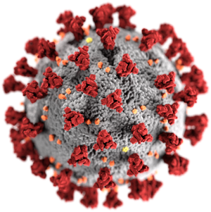
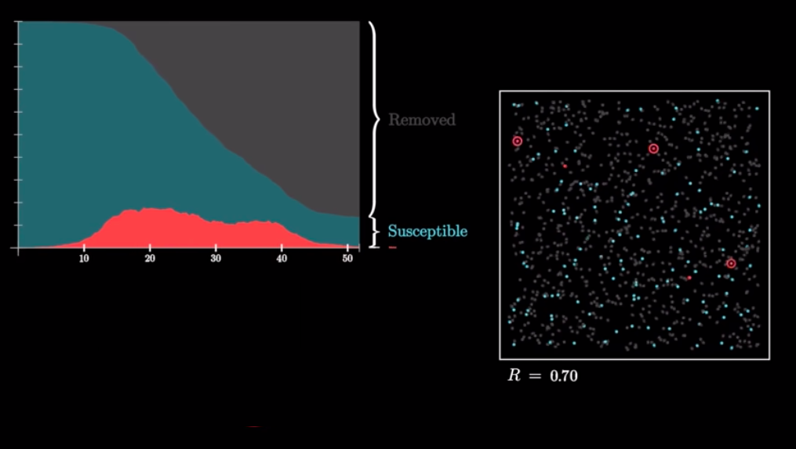
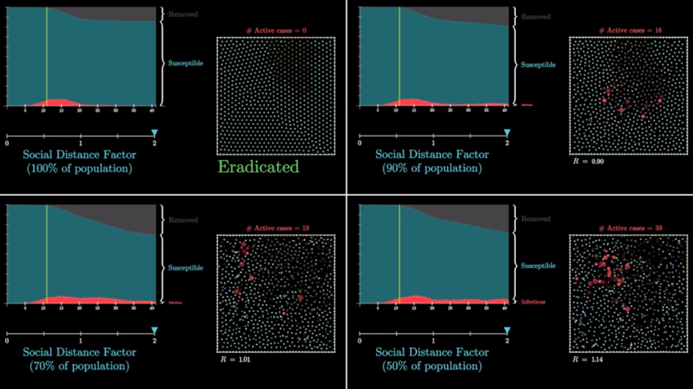
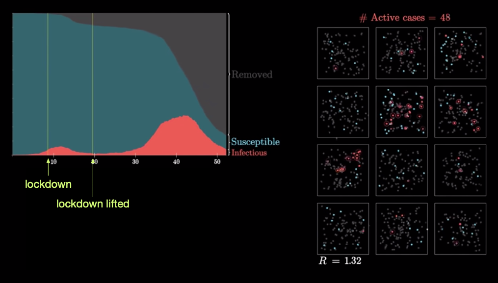
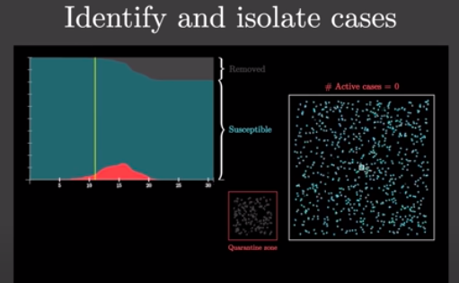

CoViD-19, Lockdown, and why it works!
This page is intended to help you understand what happens when an epidemic is left to spread unchecked, what happens when lockdown measures are put in place, and what happens when they are lifted, both brutally, and slowly with other measures in place.

This illustration, created at the Centers for Disease
Control and Prevention (CDC) [...]. A novel coronavirus, named
Severe Acute Respiratory Syndrome coronavirus 2 (SARS-CoV-2),
was identified as the cause of an outbreak of respiratory
illness first detected in Wuhan, China in 2019. The illness
caused by this virus has been named coronavirus disease 2019
(COVID-19).
https://phil.cdc.gov/Details.aspx?pid=23312
https://phil.cdc.gov/Details.aspx?pid=23312
Simulations



